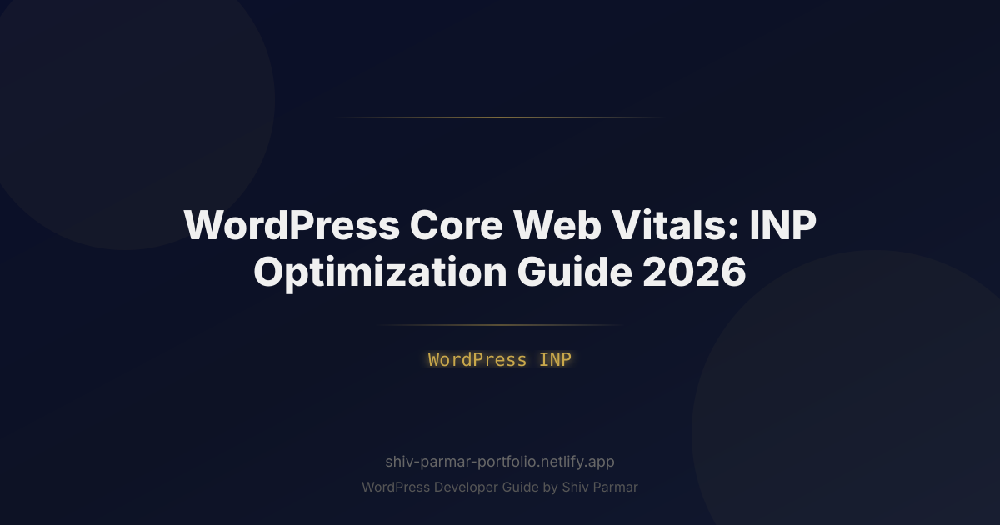

WordPress Core Web Vitals: INP Optimization Guide 2026
Table of Contents
In the evolving landscape of web performance, website owners and developers have shifted their focus toward a critical metric: Interaction to Next Paint (INP). Since officially superseding First Input Delay (FID) as a stable Core Web Vital, INP has fundamentally transformed how Google evaluates user experience. While legacy performance audits prioritized how quickly a page loaded its initial visual elements, current web standards evaluate how rapidly and reliably an interface reacts to ongoing user input throughout an entire browsing session.
For WordPress site owners, the implications of this shift are profound. WordPress powers over 40% of the web, driven by an open ecosystem of themes, page builders, and plugins. However, this architectural flexibility often introduces significant client-side bloat. Heavy JavaScript bundles, monolithic page builders, unoptimized third-party tracking scripts, and deep Document Object Model (DOM) trees consistently strain the browser's main thread. Consequently, a site may display an impressive Largest Contentful Paint (LCP) score yet completely fail the WordPress INP assessment due to sluggish mobile menus, unresponsive checkout forms, or delayed cart updates.
Achieving a "Good" INP score—consistently clocking in at 200 milliseconds or lower at the 75th percentile of real-world visits—is no longer optional. It directly influences search visibility, bounce rates, and e-commerce conversions. This comprehensive guide covers the technical nuances of the metric, practical diagnostics, and production-tested optimization techniques specifically designed to elevate your WordPress page speed and achieve seamless Core Web Vitals compliance in 2026.
What is Interaction to Next Paint (INP)?
Interaction to Next Paint (INP) is a Core Web Vitals field metric that assesses a page's overall responsiveness to user interactions. Rather than recording solely the first interaction like its predecessor FID, INP monitors all user interactions—such as clicks, taps, and keyboard inputs—that take place across the entire lifecycle of a page visit. The single worst interaction (or, on pages with hundreds of interactions, an outlier-filtered high percentile) represents the page's final INP score.
To accurately diagnose and address bottlenecks, you must understand the three distinct phases that comprise an interaction:
- Input Delay: The duration between the moment the user initiates an action (such as tapping a button) and the moment the browser's main thread can begin executing the corresponding event handlers. High input delay usually indicates that the main thread is occupied running unrelated background tasks or parsing massive script files.
- Processing Time: The total time required to execute the JavaScript code associated with the event handlers. Complex state changes, synchronous calculations, and DOM mutations expand this phase.
- Presentation Delay: The time elapsed after the event handlers have finished running until the browser calculates the updated layout, repaints the interface, and composites the new visual frame to the screen.
Google categorizes INP performance using three strict thresholds:
- Good: Less than or equal to
200ms. The interface feels instant and fluid. - Needs Improvement: Between
200msand500ms. Noticeable lag begins to degrade the user experience. - Poor: Greater than
500ms. Significant delays cause users to double-click elements, abandon carts, or bounce entirely.
Importantly, INP does not measure operations like continuous scrolling or hovering directly. It focuses on discrete, intentional inputs where users expect clear visual confirmation: expanding an accordion, submitting a search query, opening a mobile navigation drawer, or adding an item to a WooCommerce basket.
Why WordPress INP Matters in 2026
The transition toward INP marks a permanent shift toward Real User Monitoring (RUM) and field-measured performance. While synthetic lab tools like Google Lighthouse provide useful debugging snapshots, Google's ranking algorithms rely entirely on the Chrome User Experience Report (CrUX) dataset. If real users visiting your WordPress site experience frozen inputs on mid-tier mobile hardware, your search visibility will reflect that friction.
In 2026, the performance gap between lightweight platforms and unoptimized WordPress installations has widened. Modern search engines penalize sites with high execution latency because unresponsive websites waste crawling resources and deliver poor user experiences. When a visitor taps an "Add to Cart" button and encounters a 600ms visual delay, they frequently perceive the site as broken, leading to rage-clicks, duplicate orders, and cart abandonment.
Furthermore, device disparities remain a critical consideration. While developers often build sites on powerful desktop machines, your visitors browse using budget mobile devices with thermal-throttling CPUs. These processors take significantly longer to parse and evaluate JavaScript. Ensuring optimal WordPress INP performance protects your organic ranking, optimizes mobile conversion funnels, and elevates overall technical page speed across your user base.
Step-by-Step Guide to Optimizing INP in WordPress
Remediating high interaction latency requires an orderly approach. Follow this tactical workflow to isolate execution delays, clear the main thread, and guarantee visual updates within the 200ms threshold.
Step 1: Diagnose and Profile Real-World Bottlenecks
Before modifying themes or plugins, collect diagnostic data to identify the specific interactions failing across your site. Because lab tests cannot simulate every user journey, start with real-world field data before moving to local profilers.
Inspect the Core Web Vitals report inside Google Search Console to pinpoint which URL groups suffer from "INP issue: longer than 200ms". Once you have identified problematic templates, use the Chrome DevTools Performance panel to record user interactions directly:
- Open an Incognito window and navigate to the problematic page.
- Open DevTools (
F12orCmd + Option + I) and switch to the Performance tab. - Click the Gear icon (Capture settings) and set CPU throttling to 4x slowdown or 6x slowdown to simulate real-world mobile hardware.
- Click the record button, interact with suspected elements (e.g., tap the mobile hamburger menu, toggle an FAQ accordion), and stop the recording.
- Examine the Interactions track. Long interactions will be flagged with red or yellow indicators, detailing the exact duration of the Input Delay, Processing Time, and Presentation Delay.
Step 2: Break Up Long Tasks and Yield to the Main Thread
A "Long Task" is any uninterrupted JavaScript execution that occupies the main thread for more than 50 milliseconds. When a long task runs, the browser cannot respond to user inputs, driving up the Input Delay phase of INP.
To eliminate long tasks, you must strategically break up intensive computations and yield execution back to the browser. Modern web applications utilize the scheduler.yield() API, falling back to setTimeout() where browser support dictates. Implement this yielding pattern inside custom theme scripts or heavy JavaScript modules:
// Utility function to yield execution back to the main thread
async function yieldToMain() {
if ('scheduler' in window && 'yield' in window.scheduler) {
return await window.scheduler.yield();
}
return new Promise(resolve => {
setTimeout(resolve, 0);
});
}
// Example: Processing a large list of filterable posts or products
async function renderFilteredResults(items) {
const container = document.querySelector('#product-grid');
container.innerHTML = '';
for (let i = 0; i < items.length; i++) {
const itemElement = createItemCard(items[i]);
container.appendChild(itemElement);
// Yield every 20 items to allow input processing and frame updates
if (i % 20 === 0) {
await yieldToMain();
}
}
}
By yielding periodically, you allow the browser to process incoming taps or keystrokes immediately, ensuring that interaction handlers execute without waiting for entire rendering loops to finish.
Step 3: Decouple Input Handlers and Prioritize Immediate Visual Feedback
A common mistake in WordPress themes is executing heavy business logic inside an event listener before updating the user interface. When an interaction occurs, provide immediate visual feedback (such as displaying a spinner, toggling an active class, or highlighting an input) before running secondary computations.
Leverage requestAnimationFrame() to decouple UI updates from data processing:
const filterButton = document.querySelector('#apply-filters');
filterButton.addEventListener('click', (event) => {
// Phase 1: Provide immediate visual feedback (Presentation Delay < 50ms)
event.target.classList.add('loading');
event.target.setAttribute('aria-busy', 'true');
// Phase 2: Defer expensive execution to the next rendering cycle
requestAnimationFrame(() => {
setTimeout(() => {
runHeavyFilterLogic();
event.target.classList.remove('loading');
event.target.removeAttribute('aria-busy');
}, 0);
});
});
This pattern ensures the browser renders the initial active state almost instantaneously, keeping the INP score well within the safe zone while background computations proceed asynchronously.
Step 4: Audit Plugins and Enqueue Scripts Modernly
WordPress plugins are the leading contributors to high INP scores. Bloated plugins often register complex listeners on the global window or document objects, intercepting every interaction across the site. Conduct a targeted plugin audit:
- Identify scripts running on pages where they serve no purpose (e.g., contact form assets running on blog posts, WooCommerce scripts loading on static pages).
- Deregister unused scripts conditionally via your child theme's
functions.phpfile. - Use modern script loading strategies introduced natively into WordPress core.
Add the following implementation to your functions.php to selectively unload unneeded assets and enforce asynchronous loading:
/**
* Optimize script delivery to prevent main-thread congestion.
*/
function optimize_wordpress_inp_scripts() {
// 1. Dequeue contact form scripts on non-contact pages
if ( ! is_page( 'contact' ) ) {
wp_dequeue_script( 'contact-form-7' );
wp_dequeue_style( 'contact-form-7' );
}
// 2. Dequeue WooCommerce cart fragments on pure content posts
if ( is_singular( 'post' ) ) {
wp_dequeue_script( 'wc-cart-fragments' );
}
}
add_action( 'wp_enqueue_scripts', 'optimize_wordpress_inp_scripts', 99 );
/**
* Leverage WordPress script loading strategies (defer/async)
*/
function apply_modern_script_strategies( $url, $handle ) {
$deferred_handles = array( 'theme-navigation', 'custom-analytics', 'lightbox-script' );
if ( in_array( $handle, $deferred_handles, true ) ) {
return esc_url( $url );
}
return $url;
}
add_filter( 'wp_resource_hints', 'apply_modern_script_strategies', 10, 2 );
// Or using standard wp_enqueue_script strategy array (WP 6.3+)
function register_deferred_assets() {
wp_register_script(
'custom-interactive-logic',
get_template_directory_uri() . '/js/interactive.js',
array(),
'1.0.0',
array(
'strategy' => 'defer',
'in_footer' => true,
)
);
wp_enqueue_script( 'custom-interactive-logic' );
}
add_action( 'wp_enqueue_scripts', 'register_deferred_assets' );
Step 5: Reduce DOM Size and Simplify CSS Selectors
The Presentation Delay phase is heavily influenced by the complexity of your Document Object Model. When a user clicks an interactive element, the browser must recalculate styles, recalculate layout geometries, and composite the screen. If your page contains 3,000 DOM nodes or nesting depths greater than 32 levels—a frequent side effect of visual page builders—style recalculations can exceed 150 milliseconds on their own.
Take direct steps to streamline your layout:
- Flatten your markup: Audit page builder templates. Strip out redundant inner wrapper sections, empty containers, and nested layout wrappers.
- Implement Modern CSS Containment: Use the
content-visibilityandcontainproperties to isolate layout updates to specific page components.
/* Inform the browser engine to isolate layout rendering for below-the-fold content */
.article-comments-section {
content-visibility: auto;
contain-intrinsic-size: 0 500px;
}
/* Prevent deep layout shifts from leaking out of isolated widgets */
.sidebar-widget {
contain: layout style;
}
By applying content-visibility: auto, the browser skips layout and rendering computations for off-screen elements until they approach the viewport, significantly speeding up on-screen style recalculations when users click buttons or toggle interfaces.
Step 6: Control Third-Party Tag Managers and Tracking Scripts
Third-party marketing tags, live chats, heatmaps, and remarketing pixels represent a major cause of sudden input degradation. These scripts routinely register tracking listeners that intercept every user click, serializing data payloads synchronously and exhausting the main thread.
Configure Google Tag Manager and associated scripts using these performance-first principles:
- Avoid assigning tracking pixels to fire on broad triggers like "All Clicks" or "Scroll Depth" without strict throttling.
- Load customer support live chat widgets via facade buttons (clickable placeholder UI). Fetch the actual multi-megabyte chat libraries only after the user actively clicks the launcher icon.
- Utilize web workers via tools like Partytown to run analytics scripts (Google Analytics 4, Meta Pixel) entirely off the main thread.
Best Practices for Sustained Performance
Achieving a compliant INP metric is an ongoing discipline, not a one-time fix. As plugins receive updates and marketing teams introduce new tracking assets, your site performance can degrade quickly without deliberate governance. Implement these established practices to maintain optimal speeds over time:
1. Enforce Real User Monitoring (RUM)
Lab testing tools will not trigger the complex interactions real users perform across varying devices. Integrate lightweight RUM tracking into your site using Google's official web-vitals library. Send interaction data straight to an internal logging endpoint or your analytics suite:
import { onINP } from 'web-vitals/attribution';
onINP((metric) => {
// Send metric and attribution data to your analytics endpoint
const body = JSON.stringify({
interactionTarget: metric.attribution.interactionTarget,
interactionType: metric.attribution.interactionType,
loadState: metric.attribution.loadState,
inpScore: metric.value,
inputDelay: metric.attribution.inputDelay,
processingDuration: metric.attribution.processingDuration,
presentationDelay: metric.attribution.presentationDelay,
});
navigator.sendBeacon('/wp-json/performance/v1/log-inp', body);
});
2. Replace jQuery-Heavy Dependencies with Vanilla JavaScript
While jQuery remains bundled with WordPress core, modern web design rarely requires it. Legacy plugins using complex jQuery selector chains trigger multiple expensive DOM traversals for single events. Where possible, refactor theme components (like mobile menus, search modals, and accordions) to clean vanilla JavaScript utilizing native microtask scheduling.
3. Use Debouncing and Throttling on Continuous Handlers
Interactive inputs like search bars, dynamic pricing filters, and instant auto-completes can trigger dozens of processing loops per second. Always debounce inputs to guarantee that expensive DOM rendering operations fire only after the user pauses typing:
function debounce(callback, delay = 250) {
let timeoutId;
return (...args) => {
clearTimeout(timeoutId);
timeoutId = setTimeout(() => callback.apply(null, args), delay);
};
}
const searchInput = document.querySelector('#site-search-input');
searchInput.addEventListener('input', debounce((event) => {
fetchSearchResults(event.target.value);
}, 300));
4. Adopt Edge Caching and Full-Page Cache Preloading
While caching primarily targets Time to First Byte (TTFB), a slow server response has downstream effects on INP. If dynamic operations (such as adding items to a cart) require round trips to a slow server, the client UI often freezes waiting for the response. Deploy robust object caching via Redis and dynamic edge caching (via Cloudflare or fast CDN providers) to minimize network latency during transactional interactions.
Common Mistakes to Avoid
When working to improve Core Web Vitals, developers often deploy sweeping performance fixes that can unintentionally degrade responsiveness. Be sure to avoid these widespread pitfalls:
Blindly Delaying All JavaScript
Many popular WordPress optimization and caching plugins offer a setting to "Delay JavaScript Execution Until User Interaction." While this technique artificially produces perfect 100/100 Lighthouse scores, it often harms real-world INP scores. When a user first taps the screen, the browser must suddenly download, parse, and execute dozens of delayed JavaScript bundles simultaneously. The resulting main-thread freeze can cause INP values to spike well beyond 1,500ms.
Ignoring Presentation Delay
Developers often focus exclusively on the JavaScript processing duration, assuming an event listener that runs in 15ms is inherently safe. However, if that listener modifies a high-level layout element causing deep DOM re-flows across 2,000 sibling elements, the Presentation Delay will surge. Always inspect the entire waterfall in DevTools—including the Layout and Pre-Paint stages—rather than examining script runtimes alone.
Over-Relying on Synthetic Lighthouse Audits
Lighthouse audits measure Total Blocking Time (TBT) as a lab-based proxy for responsiveness. While reducing TBT often benefits INP, the two metrics do not correspond directly. A page with zero blocking time during initial load can still suffer poor INP scores if a single slider or interactive drawer freezes the interface ten seconds into the visit. Rely on field data to make informed optimization decisions.
Running Synchronous Layout Thrashing Loops
Avoid interleaving style reads and writes within your interaction handlers. Calling properties like offsetHeight, offsetWidth, or getBoundingClientRect() directly after altering an element's inline styles forces the browser into immediate, synchronous layout calculations. Group all style reads together before executing any DOM writes.
Conclusion
Optimizing for Interaction to Next Paint represents the contemporary standard for modern web performance. The era of purely focusing on initial load speed has given way to runtime efficiency and sustained user responsiveness. For WordPress sites, achieving INP success demands an intentional architectural approach: decluttering redundant plugins, modernizing asset delivery, pruning the DOM tree, and yielding main-thread execution back to the browser.
By shifting your development strategy away from synthetic lab scores and toward real user experiences, you insulate your WordPress infrastructure against algorithm updates, safeguard your search presence, and eliminate performance friction across every interaction.
Don't wait for sudden drops in your organic traffic to take action. Run your high-traffic page templates through Chrome DevTools, review your CrUX data inside Google Search Console, and systematically implement these optimizations today to deliver a reliable, lightning-fast user experience.
Frequently Asked Questions
What is a good INP score for WordPress?
Google rates INP as Good at 200 milliseconds or less, Needs Improvement between 200 and 500, and Poor above 500, measured at the 75th percentile of real visits. INP scores the whole page visit rather than just the first input, so one slow interaction can drag an otherwise fast page down.
How do I find which pages have bad INP?
Start with the Core Web Vitals report in Google Search Console to find URL groups flagged with INP issues over 200ms, then reproduce them in Chrome DevTools. Record the interaction with CPU throttling set to 4x or 6x slowdown and read the Interactions track to see whether Input Delay, Processing Time, or Presentation Delay dominates.
How do I break up long JavaScript tasks?
A long task is any uninterrupted script over 50 milliseconds, so yield control back to the browser periodically using scheduler.yield() with a setTimeout fallback, such as every 20 rendered items. Also give immediate visual feedback with a loading class before running heavy logic so the interface responds while work continues in the background.
Will delaying JavaScript execution improve my INP score?
Usually not. When the first tap forces the browser to download and execute dozens of deferred bundles at once, the main-thread freeze can push INP past 1,500ms, so it is better to dequeue unused scripts, load the rest with defer, and move third-party tags off the main thread with tools like Partytown.